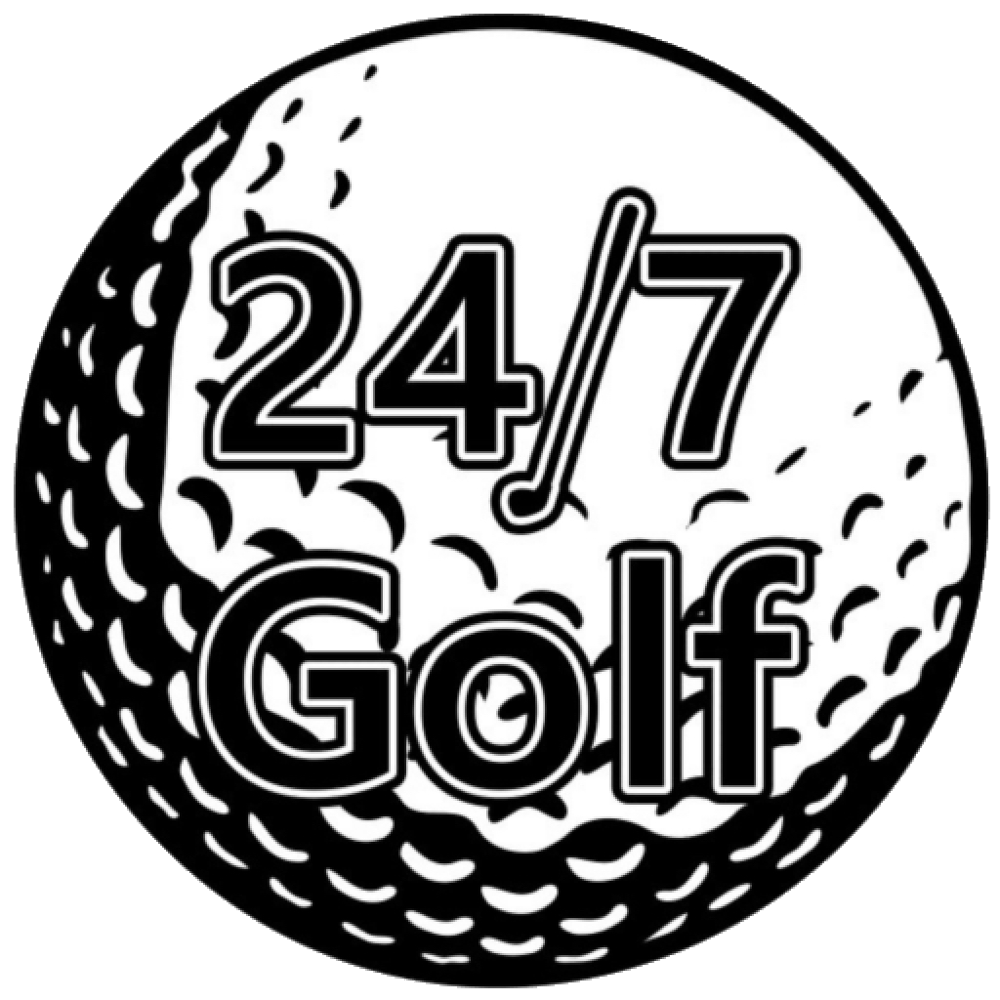

<!--
  24/7 Golf — Shared Navigation
  Copy this into every page. Adjust href paths based on page location:
  - Pages in /pages/ use href="../pages/..." for other pages
  - Booking CTA links to CourtReserve or index.html#create-account
-->

<nav class="site-nav">

  <a href="../pages/index.html" class="nav-logo">
    
    <span class="nav-logo-text"><span class="nav-logo-accent">24/7</span> GOLF</span>
  </a>

  <button class="nav-hamburger" aria-label="Open menu" aria-expanded="false">
    <span></span>
    <span></span>
    <span></span>
  </button>

  <ul class="nav-links">
    <li><a href="../pages/locations.html">Locations</a></li>
    <li><a href="../pages/index.html#how-it-works">How It Works</a></li>
    <li><a href="../pages/index.html#trackman">Trackman iO</a></li>
    <li><a href="../pages/index.html#app">Get the App</a></li>
    <li><a href="../pages/faq.html">FAQ</a></li>
    <li><a href="../pages/index.html#create-account" class="nav-cta">Book Now</a></li>
  </ul>

</nav>
